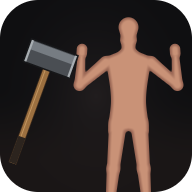

Realistic Physics
A 2D simulation of realistic injuries: skin, muscle and bone stretch, tear, break and bleed through real physics, not canned animations.
Content warning: graphic simulated injury, including blood, torn tissue and broken bones.

Play it as an app
- Drag
- Swing the tool into either fighter; hold it there and drag on to press harder
- H / B / S / F
- Sledgehammer, bat, knife or bare fist
- ← / →
- The left fighter punches the right / the right fighter punches the left
- Space / R
- Pause / reset the fighters
- M
- Sound on or off
- I
- Show this page again
- Touch
- Drag a finger to strike; tap the buttons along the bottom
About
The injuries are checked against published injury research, so a slow push only bruises and a hard swing can break a bone.
Made by Azizjon Kasimov with AI coding agents.